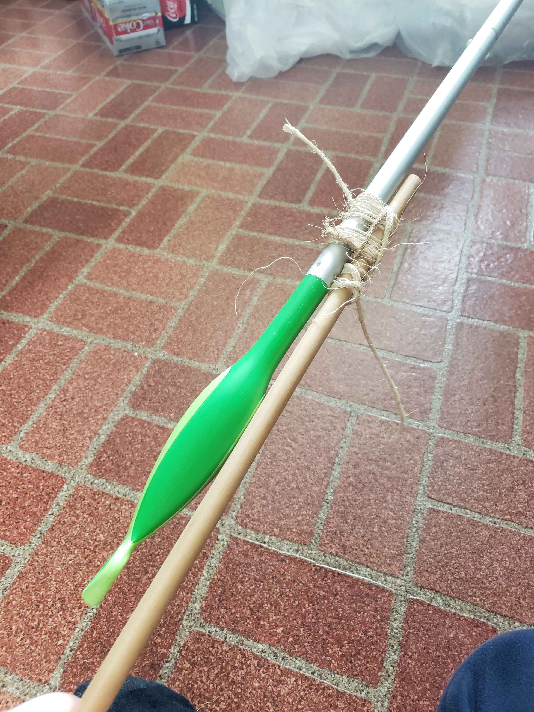

| First: | Tie a clove hitch close to the end of the first stick, but not entirely at the end. |
|---|---|
| Second: | Place the second stick parallel to the first, lining up the hitch where the desired connection point is. |
| Third: | Begin wrapping the rope around the sticks tightly. Push down to tighten further as needed. |
| Fourth: | Once to the desired wrapping point, begin looping the rope tightly around the loops perpendicular to them. It might be hard, but still tighten as much as possible. |
| Fifth: | When to the desired sturdiness or end of the rope, tie a clove hitch on the second stick to finish the lashing. |
Images to help
Navigation